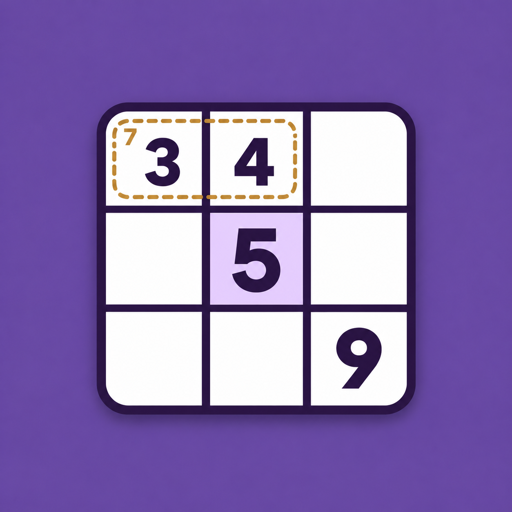

How to Play
Learn the controls and cage logic in the current Killer Sudoku web game.
1. Choose your puzzle
Select New game and choose Easy, Medium, Hard, Expert, Master, or Extreme. Selecting a difficulty replaces your current progress. Close the picker to keep playing the same puzzle.
2. Read the cage totals
Dashed outlines group cells into cages. The small number in a cage’s topmost, leftmost cell is its total. Fill the cage with different digits that add up to that total. A two-cell cage totaling 3 needs 1 and 2; a single-cell cage gives its cell’s answer directly.
3. Apply the Sudoku rules
Every row, column, and 3 × 3 box must contain digits 1 to 9 exactly once. Combine those rules with cage sums. A two-cell cage totaling 4 needs 1 and 3, because 2 and 2 would repeat a digit inside the cage.
4. Select and enter
Select an editable cell, then tap a number. Original bold clues cannot be changed. The selected cell’s row, column, and box are highlighted, as are matching digits. Use Erase to clear your entry and its notes. Outside Notes mode, number-pad digits appearing nine times are disabled.
5. Record possibilities
Turn Notes on, select an empty cell, and tap digits to toggle pencil marks. Turn Notes off to enter a final answer. A final entry clears the cell’s notes and matching notes in its row, column, and box. Cage-only candidates must be removed manually.
6. Watch your lives and cage totals
Every changed incorrect final answer removes one heart, even if there is no visible conflict. Red digits can indicate row, column, box, or cage duplicates, an exceeded cage total, or a filled cage with the wrong sum. Three mistakes end the game. Tapping the same value again adds no mistake.
7. Reveal a hint
Hints immediately fills the selected empty or incorrect editable cell. If that selection is fixed or correct, it fills the first empty or incorrect cell instead. You have three hints at every level. A reveal uses one hint, clears related notes, and gives no points.
8. Pause, restart, or finish
Pause hides the board and stops the timer. Resume game continues play. Restart keeps the same puzzle and cages while resetting your entries, notes, score, timer, lives, and hints. Fill every cell correctly to win. After a win or the third mistake, entries and hints are blocked.
Keyboard controls
Focus a board cell first. Press 1–9 to enter digits, use arrow keys to move, press Backspace, Delete, or 0 to erase, and press N to toggle Notes.
Keep your current puzzle
Progress is held only while the game page stays open. Reloading or navigating away discards it. Open help and legal links in a new browser tab to read them without leaving your puzzle.